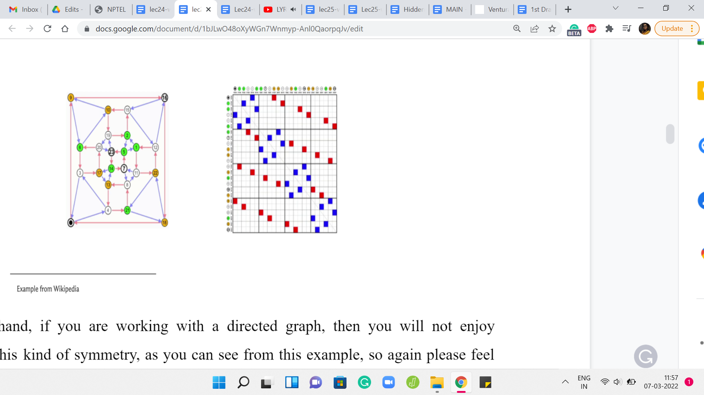
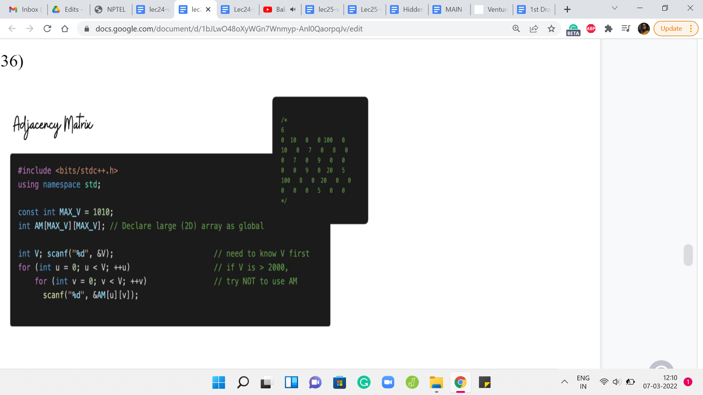
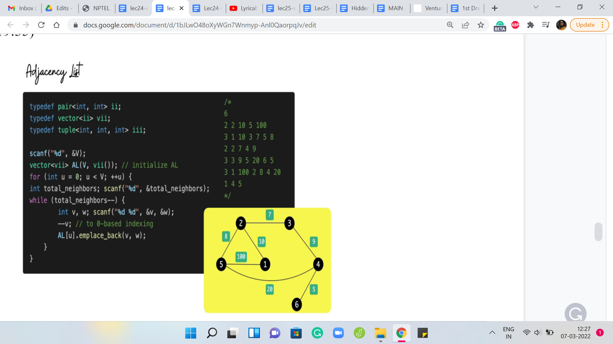
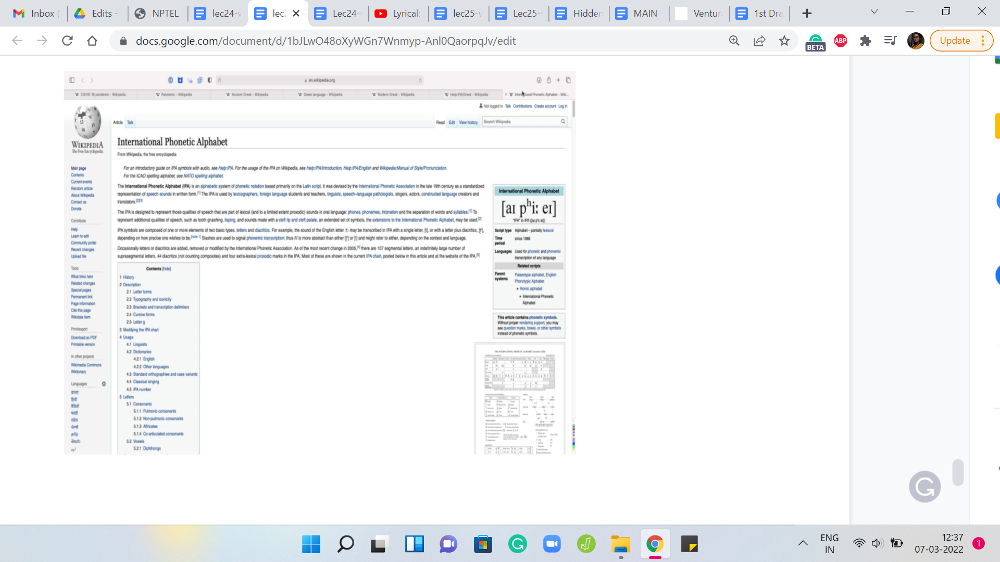
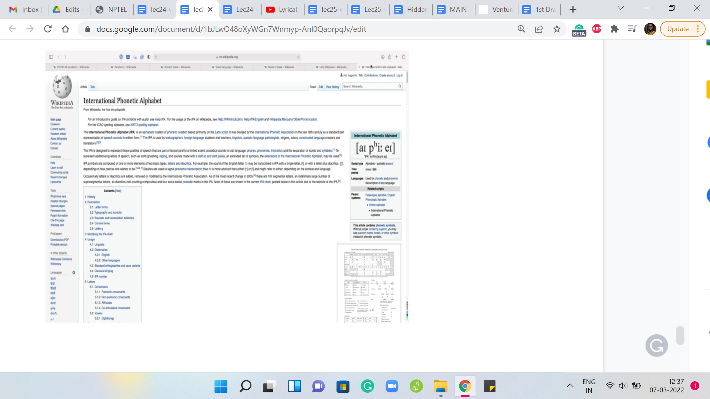

M 1 (Graph Traversals)
Lecture - 24
Graph Foundations - Module 1 (Graph Traversals)
(Refer Slide Time: 00:30)

Hello and welcome to week five of Getting Started with Competitive Programming. This week marks the start of our graph algorithms journey and we are going to be fairly focused on graph algorithms all the way up to week nine or so. In this week, we will talk a lot about two fundamental graph traversal algorithms called breadth-first search and depth-first search, or BFS and DFS for short.
These are very popular traversal algorithms, which have a lot of interesting properties and applications. Chances are that you are already familiar with the traversals themselves. If you are comfortable with implementing them, you should feel free to just skip this video and jump straight into the three problems that we will be solving this week.
However, if you are not super familiar with how to implement these traversals, then you want to stick around. We are going to start with actually the basics of graphs themselves and how we represent them, just to make sure that this presentation is self-contained. To begin with, what is a graph?
(Refer Slide Time: 01:20)

Formally a graph is usually given by a pair V, E, where V can be any set you like and E is a collection of pairwise relationships between the elements of V. The set V is often called the set of vertices or nodes and the set E is usually referred to as the set of edges or connections.
Now, this particular formulation may strike you as being a little bit abstract and also overwhelmingly simple. But it turns out that even a simple idea can capture a lot of different scenarios. You have probably encountered graphs already in your day-to-day life. For example, the road network in your city can be thought of as a graph, with the key locations being modeled as vertices and roads that connect these key locations as being the edges or the connections.
Social networks that you might be a part of can also be thought of as graphs. For example, you have Facebook, where you could think of the people who use Facebook as being vertices and two individuals being friends is being represented by edges. Another popular social media network is Twitter.
But the idea of a relationship on Twitter is slightly different from the way it works on Facebook. Typically, friendships on Facebook are mutual. Whereas, on Twitter, you could follow somebody without having that person follow you back. The pair-wise relationships in Twitter are not necessarily symmetric, whereas they are on Facebook.
When you have a ‘symmetric’ relation, you typically model this with what is called is an undirected graph, where the edges do not have any orientations. Whereas if you have an ‘asymmetric’ relationship, then you model them as a directed graph where the edges do have orientations so that you can remember which way the relationship goes. Sometimes you also have mixed graphs, where you allow for both directed and undirected edges. But that is going to be not very relevant to our discussion right now.
(Refer Slide Time: 03:24)

Graphs usually have a very neat visual representation. You could think of each vertex as being represented by a dot in the plane and whenever you do have a relationship or an edge between these two vertices, you connect them by a line. If you have an undirected edge, it would look like that. If you have a directed edge coming from an asymmetric relationship, then you could represent it with an arrow, with the arrowhead pointing in whatever direction you want it to based on the way the pair is given.
Of course, if you have both ‘x y’ and ‘y x,’ then you could have arrows pointing both ways. Or if it is a mixed graph, then some of the edges are going to have arrowheads and some of them will not. Now sometimes you want your graph to actually store additional information. For example, if your graph is modeling a road network, then you might want the edges to have weights on them to somehow represent either the length of the road or the quality of the road or the cost of traveling on that road if there is a toll gate, for example, and so on and so forth.
You will often encounter graphs that have weights on either the edges or the vertices or perhaps both. Sometimes your edges could also be colored. For instance, maybe you have a friendship network that not only captures friendships but also captures rivalries. You might say that you have a red edge to denote a rivalry, a green edge to denote friendship, and perhaps no edge to denote neutrality, that perhaps these people do not know each other to begin with.
Now, in some situations, you might also want to allow for the possibility of having multiple edges between the same pair of vertices in a graph. This is usually not the default situation. So, the set of edges, when thought of as a collection of pairs over V, is usually thought of as a set, as opposed to a multi-set.
We would not normally allow for this kind of repetition. But maybe your application requires that, perhaps, you are keeping track of the number of times that something happens between a pair of vertices and so on. Notice that you can also capture this with edge weights. Instead of repeating pairs in E, you could just have a weight function that keeps track of the number of times that a particular edge is repeated.
Nonetheless, graphs, where you do allow for repetitions of edges, are usually called multi-graphs, and graphs, where you do not allow for this, are called simple graphs. Another feature of multi-graphs, which is something that is not allowed in a simple graph, is the possibility of having the so-called self-loop.
You could have a vertex, which has an edge to itself. This is not something that will happen in a simple graph. But if you are working with a multi-graph, then multiple edges between distinct pairs of vertices and edges from a vertex to itself, all of this is fair game. Normally, we will be working with simple graphs, which are undirected and unweighted.
But of course, depending on the problem that you are trying to solve, you might need edge weights – that is pretty common. You might also need your graph to be directed, which is also fairly common. Everything that we discuss here will (generally speaking) apply to directed graphs for sure. We do have to be careful once we start talking about weights.
For example, when we look at breadth-first search, we will see that that is one way of getting the shortest paths between pairs of vertices. But this is under the assumption that we are working with an unweighted graph. Once you bring weights into the mix, this may not be true. In fact, next week, we are going to look at other algorithms that deal with this situation when we do have weights to worry about and we will be looking at the shortest path algorithms that take care of this more general case.
You do have to be a little bit careful about what exact situation you are in. But as I said, for the sake of making this discussion concrete, we are going to assume that we are working with simple, undirected, and unweighted graphs with the comment that most of this translates quite easily to directed graphs in a very natural way.
(Refer Slide Time: 07:40)


Let us just take a look at a couple of examples of graphs so that we can get back to how we store them when we write our code. Here is a couple of examples straight from the Wikipedia page on graphs. Now let us take a look at the first way that we can store a graph in memory. How do we represent a graph when we are writing code?
(Refer Slide Time: 08:04)

A natural way to do this is the so-called adjacency matrix and this is what this looks like. So, this is an ‘n X n’ matrix, where ‘n’ is the number of vertices in your graph and the ‘i j’th entry, which is to say the entry in the ’i’th row and the ’j’th column is a ’1,’ if and only if there is an edge from ‘i to j.’
Notice that if your graph is undirected, then the corresponding adjacency matrix will be symmetric, which is to say that, for instance, if you were to take the picture of the matrix that you are seeing on your screen right now and if you were to print it out and if you were to fold this picture along the diagonal, then you will see that the colored boxes are going to line up over each other and the uncolored locations are also going to exactly overlap on each other. That is symmetry around the diagonal.
(Refer Slide Time: 08:54)

On the other hand, if you are working with a directed graph, then you will not enjoy necessarily this kind of symmetry, as you can see from this example. Again, please feel free to pause the video here and really spot and appreciate the asymmetry in this adjacency matrix. If you just focus on entries on either side of the diagonal, for instance, you will immediately spot examples of asymmetry. Moving on, let us actually take a closer look at an adjacency matrix construction when weights are involved.
(Refer Slide Time: 09:26)

Here is an unweighted graph with the edge weights written in green boxes alongside the edges, and here is its adjacency matrix representation. It is exactly as you would expect with the ‘i j’th entry denoting the weight of the edge between the vertices ’i’ and ‘j,’ and because this is an undirected graph, this edge weight gets captured twice in this adjacency matrix.
But notice that the formulation works just as well to capture directed and weighted graphs as well. The ‘i j’th entry will simply reflect the weight of the edge from ’i’ to ‘j,’ if this edge were to exist in the graph. Now let us just look at a couple of features of the adjacency matrix representation.
(Refer Slide Time: 10:13)


First, notice that it is pretty space-intensive. It actually will always consume n2 units of space, irrespective of whether the graph actually has n2 edges or not. So, a sparse graph is a graph intuitively where there are not very many edges and in particular, let us say that you have only a linear number of edges like you would have if your graph was a tree, for example.
Even for such graphs, you are actually consuming n2 units of memory and your adjacency matrix is just going to look like a vast ocean of 0s with a few 1s scattered here and there. It feels very wasteful and in the context of competitive programming, you know that apart from time limits, you also have space limits, which makes the adjacency matrix representation infeasible in any situation where you have more than a few 1000 vertices in your graph.
Do watch out for that and keep that at the back of your mind. If the number of vertices in your graph is in excess of, let us say, 3000 or 4000, then you probably do not want to be using an adjacency matrix representation. But when is this a good representation? Well, it works pretty well for detecting if a pair of vertices have an edge between them or not.
If your application makes frequent use of such queries, then probably this is going to be a relevant representation. Notice that checking if there is an edge between ‘i’ and ‘j’ or from ‘i’ to ‘j’ is simply an array look-up if your graph is stored as an adjacency matrix. On the other hand, let us think about how much time does it take to enumerate all the neighbors of a vertex in a graph?
What are the neighbors of a vertex? For instance, in this example, the vertex labeled 1 has neighbors in the vertices that are labeled 2 and 5. Vertex 2 has neighbors 1, 3, and 5. The vertex 6 has only one neighbor and that is 4 and so on and so forth. If you wanted to use the adjacency matrix to actually enumerate all the neighbors of a vertex, how much time do you think that will take?
If you think about it for a moment, you will probably realize that this is going to take order ‘n’ time, irrespective of how many neighbors a vertex has. You could be vertex number 6 with just 1 neighbor. But for the algorithm to be able to know that, it still has to scan the entire row or column corresponding to the vertex 6 to figure out how many neighbors it has.
Of course, if it is an undirected graph, you could scan either the row or the column. In a directed graph, you have to distinguish between whether you want to enumerate the ‘in’ neighbors, which is all the vertices that have an edge into this vertex, arrowheads pointing inwards or the ‘out’ neighbors, which is all the vertices that this vertex is a neighbor 2. That is the arrowheads pointing outwards.
Once again, to enumerate either the ‘in’ neighbors or the ‘out’ neighbors would require a full scan of the row or the column corresponding to this vertex. The point is that it is going to take time proportional to the total number of vertices in the graph, even if this vertex has, relative to the total number of vertices, a very small number of neighbors.
The number of neighbors that any vertex has is called the degree of that vertex, and ideally, you would want to be able to enumerate the neighbors and time proportional to the degree of a vertex as opposed to a blanket order ‘n’ kind of a running time. This is a fairly substantial drawback when working with adjacency matrices. As we will see, this is also something that is going to make your graph traversal algorithms a little more expensive if you were to use adjacency matrices instead of adjacency lists, which is the next representation that I want to discuss.
An adjacency list is a representation that is motivated by the need to essentially have a more efficient way of being able to traverse the neighborhoods and also have a more space-efficient representation, which hopefully is a function of the actual amount of material in the graphs. We want a representation that is not always going to be order n2 but is actually going to reflect the density or the sparsity of the graph. More edges more space, naturally. But fewer edges, hopefully, less space.
(Refer Slide Time: 14:57)

Here is what the adjacency list representation looks like. Let us use the same example as before. What we are going to do is essentially store the information about this graph as a collection of lists. There are going to be as many lists as there are vertices in the graph. In this example, we have 6 of them. So, there are going to be 6 lists and each list is essentially going to be ‘information’ about all the neighbors of the corresponding vertices.
Notice that because we are working with a weighted graph, this list will also have to carry information about the weights of the neighbors. Essentially for each vertex, the list is going to consist of the labels of the neighbors immediately followed by the weights. Of course, for an unweighted graph, you could either just skip the weights or set them all to 1 or some other default, which makes sense in the setting of your problem.
This is the adjacency list representation. Notice that the amount of space that you need is just twice the number of edges because every edge is going to feature in exactly two lists corresponding to its two endpoints. The amount of time that you need to enumerate all the neighbors of a vertex is now proportional to its degree because all you have to do is walk through the list corresponding to the vertex. You are going to take just the amount of time that you need, which is to say, you are going to take time proportional to the degree of the vertex to be able to enumerate its neighbors.
In this sense, the adjacency list has two advantages over the adjacency matrix representation. But of course, the one thing that it will not do so well is to tell you if there is an edge between a given pair of vertices i and j. This was the one thing that was really easy in the adjacency matrix representation.
But here, if you want to know if ‘j’ is a neighbor of ‘i’ or not, then you will have to essentially scan the whole list corresponding to either i or j and look for the other guy and try to figure out if there is an edge between them or not. Hopefully, these two representations make sense.
These are not the only representations. There are others. Another common one is the edge list representation, which you are welcome to look up. I am not going to present it here because, for the most part, everything that we are going to do will be very workable with either the adjacency matrix or the adjacency list representations. Now let us just take a quick look at the implementations of these representations starting with the adjacency matrix first.
(Refer Slide Time: 17:36)

Here, we are basically declaring a two-dimensional array with a substantial amount of space in reserves. You can initialize MAX_V to the maximum amount of space that you would need. You could derive this by just looking at the constraints of your problem and once you have reserved enough space, it is just a matter of populating this matrix.
Now the code that is written here is designed to take this kind of input, where you literally have the rows of the adjacency matrix being spoon-fed to you. But a more typical representation is of a list of edges.
You would just essentially have to go through that list and make sure that the right entry is triggered to 1. It is also going to be equally simple. In fact, in some ways even simpler because all you have to do is run one for loop that traverses the list of edges. Let us say you have taken values U and V from the current line, you just have to make sure that AM of UV is set to 1. If there are weights involved, then typically the list representation will have the weights specified either as the first or the last numbers. Just make sure that you also append the weight. Instead of setting the matrix entry to 1, you actually set it to the value of the weight that has been given to you.
That is all that you need to do. So, the adjacency matrix representation has a fairly straightforward implementation and this code is actually from the GitHub repository for the competitive programming book. I will have a link to it in the description. You can go ahead and take a look. Run it and play around with it and make sure that it makes sense.
(Refer Slide Time: 19:35)

Now let us take a look at the adjacency list representation. The code here seems to be a little bit longer, but it is also equally straightforward to pass. In terms of the representation, as you might remember, an adjacency list representation involves creating ‘n’ different lists, each of which can store the list of neighbors. But remember, we might also have to account for weights.
Each list is not just a list of vertices, but it is a list of vertices along with information about the weight of the edge that is being represented when you put this vertex in that list. Instead of just having a list of lists of integers, we are going to have a list of lists of pairs of integers. Hopefully, that makes sense. Every pair is going to represent a vertex, the weight of the edge between that vertex, and the vertex represented by the list that this pair is on.
Once again, let us go back to the graph that we had earlier and this is going to be represented by this kind of input. There are 6 lines corresponding to the 6 vertices. Every line starts off with a number that represents the degree of the vertex. That tells you how many vertices to anticipate and how many more entries are coming up.
Now, because we have information about weights, if the degree for example is 2, you should expect 4 entries because you are going to get information about the 2 vertices, which are the neighbors, and also the weights corresponding to the edges that the current vertex has to these two other vertices.
Just to be sure, let us walk through what is going on here. The very first line tells you how many vertices they are. That gives you a sense of how many times the outer for loop should be run. Once you get into the outer for loop essentially, each snapshot represents what is going on with one vertex.
When you are reading the ‘i’th line, you are essentially populating the adjacency list for vertex number ’i.’ What does the ith line look like for any ‘i’ between 1 and n? Well, the first number is the degree of the vertex ‘i.’ That tells you how many times the inner for loop should run and every time you are inside the inner for loop, you need to take in two pieces of information.
One is the label of the neighbor, and the other is the weight that this neighbor brings with it. That is going to be the weight of the edge between ‘i’ and the neighbor that is just going to come in. You read in these two pieces of information, make a pair out of them, and append this pair to the list that is the ’i’th list. The list that is tracking all the information about the ’i’th vertex.
That is essentially the adjacency list representation. You might have to adjust this a little bit in case your edges do not have weights or if the edges are being given to you in a different input format. Once again, a pretty common format for graphs is just a list of edges and again, you will have to tweak this code a little bit, if that is the form in which you receive your input.
When there are no weights, you can either use a sensible default value for the weights or you could simply switch to using a list of ‘list of integers’ as opposed to a list of ‘list of pairs of integers’ – so, whatever is convenient in a given situation. You can find a link to this code in the description.
Once again, this is from the GitHub repository for the Competitive Programming book. I would again encourage you to play around with this and see if you can adapt it to different settings like especially graphs without weights or graphs where the input is given as a list of edges as opposed to in the adjacency list format, as was the case here. With that said, let us now move on and talk about graph traversals a little bit.
This video is split into two parts. We will actually talk about the algorithms in the next video. But just before that, so you have something to think about, I want to give you some intuition about how these two traversals work. I like to think of the breadth-first and the depth-first traversals as capturing two distinct web browsing styles.
(Refer Slide Time: 24:06)


 

Suppose you are looking at the Wikipedia page for the COVID-19 pandemic. This is a long page with a bunch of different links and we all like to open browser tabs in the background when we are reading something. The two browsing styles that I was talking about are the following.
One could be that you just like going down the rabbit hole of distraction. As you are reading, the first time you encounter a link, you just click on it and you open it and you start looking that up.
Now as you start reading, this is the first link that you encounter, you click on that, and then as you are reading this, you click on the first link that you encounter again and you just keep going. The only thing you are probably careful about is to not visit a link that you have already visited before because if you think about it, that is going to lead you to just going in circles and you want to avoid that.
But other than that, you just keep going. The moment you see a link, you cannot help yourself, you just click on it and the only time you stop is when you encounter a page that has no links whatsoever. That is a bit of a dead-end and at that point, you close that tab and go back to the tab that you came from and you look for the next link on that page and you keep doing this.
That is essentially the main intuition for a depth-first traversal. As I said, this is going deep into the rabbit hole of distraction in the context of web browsing. But in the context of a general graph, you want to stop somewhere and you want to explore this graph – that is kind of the idea.
You go to your neighbor and then you go to your neighbor’s neighbor and you just keep doing this, until you get stuck, until you come to a vertex, which does not have any new neighbors for you to explore. At that point, you back up and then pretty much repeat the same. That is depth-first traversal.
What about breadth-first traversal? Well, it is the opposite philosophy, where essentially, you do not want to go deep in one particular direction. But instead, you want to explore everything at the first level, first. In this case, the way you browse the web would be that you go through this page and you just open background tabs for all the links that you see on this page.
There are going to be a bunch of other links as well, but I will spare you going through the whole example. But here, the idea is that once you have opened the tabs for all of the links on this page, then you are basically done with this page and this, of course, is an especially long page, so it is going to take you a while. But let us say that once you are done, then you move on to the next open tab on your list.
Now chances are that this page has links to some of the pages that you already have open in your browser. Whenever that happens, you essentially ignore such links because these would not be fresh locations as far as you are concerned. You somehow keep track. Your browser tells you by typically coloring the links purple or something when you visited them before.
But in your code in your algorithm, you will have to explicitly keep track of what vertices you have visited already. But the idea is that, at the top level, you have explored all the neighbors, or at least in principle, you have visited all the neighbors of the top vertex by just opening up these pages and new tabs, for instance.
Now you basically go down the ladder and to the first layer and you essentially repeat this process. Every time you are at a vertex, you go through all of their neighbors that are new to you. Once you are done with that, you move to the next open tab in your browser, which when you actually think of this as an algorithm, this is going to be the next vertex in a queue, which is the most natural data structure for implementing this sort of a breadth-first idea.
To begin with, you have an empty queue and then you queue up the very first vertex and that is going to be the vertex from which you are starting your exploration. Then you look at all the neighbors of this vertex and you essentially push all of these neighbors onto the queue and mark them as visited vertices. Then you just keep popping the first element in the queue and loading up all of its new neighbors at the back of the queue.
You basically keep doing this, until you have nothing left to explore. These are essentially the two traversals. In fact, if you are feeling adventurous, you might want to just see if you want to consider how you would implement both of these traversals. Once again, in depth-first search, you essentially say – Alright, I am at the current vertex, let me find an unvisited neighbor of this vertex and go there.
Then this is an inherently recursive description. You bail out of the recursion when you have no new unvisited neighbors from the vertex that you are currently standing on. At this point you backtrack. With breadth-first search, the natural thing to do is to basically load up the new unvisited neighbors on a queue, and essentially, once that is done, you pop the head of the queue and do this again. You keep doing this until you have run out of vertices to explore.
These traversals are very natural and have a lot of interesting applications, and happen to be very efficient. We will talk more about both of these traversals in the second part of this module. I will see you there!